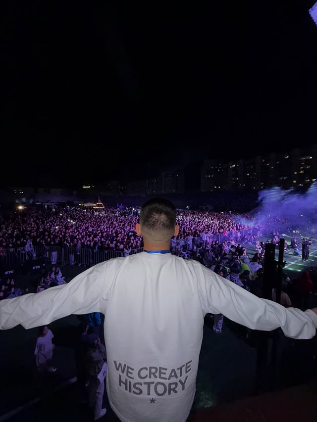

Фестиваль, который собрал город
PRIME FEST прошёл на стадионе «Туймаада» в Якутске. По публикации организаторов, на площадке были более 10 000 зрителей, более 20 артистов и два хедлайнера. Среди них — PIZZA и BY ИНДИЯ.
Публикация организаторовАлёша Семёнов — основатель проектов и организатор масштабных событий в Якутии.

Меня зовут Алёша. Я развиваю проекты в разных сферах — от студенческого сообщества до техники и больших событий. В каждом из них главное для меня — люди и то, что мы можем сделать вместе.
В моём профиле Instagram указаны ИМКО ППОС СВФУ, GadgetPro Якутск и PRIME EVENTS. Там же делюсь моментами из работы и жизни.
Больше обо мне в InstagramТри проекта из моего публичного профиля. У каждого — свой характер и своё сообщество.
Подробнее о проектах по их открытым публикациям. Каждая история ведёт к первоисточнику.
PRIME FEST прошёл на стадионе «Туймаада» в Якутске. По публикации организаторов, на площадке были более 10 000 зрителей, более 20 артистов и два хедлайнера. Среди них — PIZZA и BY ИНДИЯ.
Публикация организаторовИМКО — комиссия по внешним связям и имиджевой работе ППОС СВФУ. Команда проводит события в университете и за его пределами. Среди её проектов — республиканский танцевальный конкурс «Всё или ничего».
О команде ИМКОGadgetPro работает с оригинальной техникой и аксессуарами: iPhone, Dyson, PlayStation, DJI и другими устройствами. В публикации Алёши показаны чехлы, защита экрана и установка защитного стекла. Магазин указан по адресу: ул. Дежнёва, 30.
Публикация АлёшиТысячи людей на одной волне. Этот кадр — из публикации Алёши о PRIME FEST на стадионе Туймаада.
Смотреть публикациюО проектах, событиях и сотрудничестве — пишите мне в Instagram.
@semenovalesha